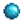

Bild
Name
Zutaten
Erhalten
Erhalten Verkaufspreis
Kirschbombe
Kupfererz (4) Kohle (1) Kupfererz (4)data-sort-value="20"> 20 G
Bombe
Eisenerz (4) Kohle (1) Eisenerz (4)data-sort-value="40"> 40 G
Mega-Bombe
Golderz (4) Solar-Essenz (1) Schattenessenz (1) Golderz (4)data-sort-value="100"> 100 G
Tor
Holz (10) Holz (10)data-sort-value="20"> 20 G
Holzzaun
Holz (2) Holz (2)data-sort-value="4"> 4 G
Steinzaun
Stein (2) Stein (2)data-sort-value="4"> 4 G
Hartholzzaun
Hartholz (1) Hartholz (1)data-sort-value="15"> 15 G
Sprinkler
Kupferbarren (1) Eisenbarren (1) Eisenbarren (1)data-sort-value="120"> 120 Gdata-sort-value="180"> 180 GBeruf Schmied .
Qualitätssprinkler
Eisenbarren (1) Goldbarren (1) Verfeinerter Quarz (1) Goldbarren (1)data-sort-value="250"> 250 Gdata-sort-value="375"> 375 GBeruf Schmied .
Iridium-Sprinkler
Goldbarren (1) Iridiumbarren (1) Batterie (1) Iridiumbarren (1)data-sort-value="1000"> 1.000 Gdata-sort-value="1500"> 1.500 GBeruf Schmied .
Mayonnaise-Maschine
Holz (15) Stein (15) Erdkristall (1) Kupferbarren (1) Kupferbarren (1)data-sort-value="60"> 60 Gdata-sort-value="90"> 90 GBeruf Schmied .
Bienenhaus
Holz (40) Kohle (8) Eisenbarren (1) Ahornsirup (1) Ahornsirup (1)data-sort-value="200"> 200 Gdata-sort-value="250"> 250 GBeruf Zapfmeister .
Einmachgefäß
Holz (50) Stein (40) Kohle (8) Kohle (8)data-sort-value="120"> 120 G
Käsepresse
Holz (45) Stein (45) Hartholz (10) Kupferbarren (1) Hartholz (10)data-sort-value="150"> 150 G
Webstuhl
Holz (60) Fasern (30) Kiefernteer (1) Holz (60)Beruf Zapfmeister : Kiefernteer (1)data-sort-value="120"> 120 Gdata-sort-value="125"> 125 GBeruf Zapfmeister .
Fass
Holz (30) Kupferbarren (1) Eisenbarren (1) Eichenharz (1) Eisenbarren (1)data-sort-value="120"> 120 Gdata-sort-value="180"> 180 GBeruf Schmied .
Ölpresse
Schleim (50) Hartholz (20) Goldbarren (1) Hartholz (20)Beruf Schmied : Goldbarren (1)data-sort-value="300"> 300 Gdata-sort-value="375"> 375 GBeruf Schmied .
Reifefass
Holz (20) Hartholz (1) Holz (20)data-sort-value="40"> 40 G
Standarddünger
Harz (2) Harz (2)data-sort-value="4"> 4 G
Qualitätsdünger
Harz (2) Jeder Fisch (1)
Harz (2)data-sort-value="4"> 4 G
Hyper Speed-Zücht
Radioaktives Erz (1) Knochenfragment (3) Solar-Essenz (1) Radioaktives Erz (1)data-sort-value="300"> 300 G
Hydrogel (Standard)
Stein (2) Stein (2)data-sort-value="4"> 4 G
Deluxe Hydro-Boden (2)
Stein (5) Fasern (3) Lehm (1) Lehm (1)data-sort-value="20"> 20 G
Baum Dünger
Fasern (5) Stein (5) Stein (5)data-sort-value="10"> 10 G
Uralte Samen
Historisches Saatgut (1) Historisches Saatgut (1)data-sort-value="5"> 5 G
Grasbündel
Fasern (10) Fasern (10)data-sort-value="10"> 10 G
Teebäumchen
Wilde Saat (Jede) (2) Fasern (5) Holz (5)
Holz (5)data-sort-value="10"> 10 G
Holzboden
Holz (1) Holz (1)data-sort-value="2"> 2 G
Rustikaler Dielenboden
Holz (1) Holz (1)data-sort-value="2"> 2 G
Strohboden
Holz (1) Fasern (1) Holz (1)data-sort-value="2"> 2 G
Verwitterter Boden
Holz (1) Holz (1)data-sort-value="2"> 2 G
Steinboden
Stein (1) Stein (1)data-sort-value="2"> 2 G
Steingehweg Boden
Stein (1) Stein (1)data-sort-value="2"> 2 G
Holzpfad
Holz (1) Holz (1)data-sort-value="2"> 2 G
Schotterpfad
Stein (1) Stein (1)data-sort-value="2"> 2 G
Pflastersteinpfad
Stein (1) Stein (1)data-sort-value="2"> 2 G
Trittsteinpfad
Stein (1) Stein (1)data-sort-value="2"> 2 G
Dreher
Eisenbarren (2) Eisenbarren (2)data-sort-value="240"> 240 Gdata-sort-value="360"> 360 GBeruf Schmied .
Fallen-Fischköder
Kupferbarren (1) Harz (10) Kupferbarren (1)data-sort-value="60"> 60 Gdata-sort-value="90"> 90 GBeruf Schmied .
Korken-Fischköder
Holz (10) Hartholz (5) Schleim (10) Hartholz (5)data-sort-value="75"> 75 G
Qualitäts-Bobber
Kupferbarren (1) Harz (20) Solar-Essenz (5) Solar-Essenz (5)data-sort-value="200"> 200 G
Schatzjäger
Goldbarren (2) Goldbarren (2)data-sort-value="500"> 500 Gdata-sort-value="750"> 750 GBeruf Schmied .
Verkleideter Dreher
Eisenbarren (2) Stoff (1) Stoff (1)data-sort-value="470"> 470 G
Widerhaken
Kupferbarren (1) Eisenbarren (1) Goldbarren (1) Goldbarren (1)data-sort-value="250"> 250 Gdata-sort-value="375"> 375 GBeruf Schmied .
Krabbenreuse
Holz (40) Eisenbarren (3)Mit Fallensteller -Beruf: Holz (25) Kupferbarren (2)
Kupferbarren (2)data-sort-value="120"> 120 G
Heiratsring
Hinweis: Dieses Rezept ist nur im Mehrspieler erhältlich.
Iridiumbarren (5) Prismatische Scherbe (1) Iridiumbarren (5)data-sort-value="5000"> 5.000 Gdata-sort-value="7500"> 7.500 GBeruf Schmied .
Müsliriegel
Eichel (1) Ahornsamen (1) Kiefernzapfen (1) Eichel (1)data-sort-value="20"> 20 G
Käfersteak
Käferfleisch (10) Käferfleisch (10)data-sort-value="80"> 80 G
Monster-Moschus
Fledermausflügel (30) Schleim (30) Fledermausflügel (30)data-sort-value="450"> 450 G
Feenstaub
Diamant (1) Feenrose (1) Diamant (1)data-sort-value="750"> 750 Gdata-sort-value="975"> 975 GBeruf Gemmologe .
Teleport-Totem: Strand
Hartholz (1) Koralle (2) Fasern (10) Koralle (2)data-sort-value="160"> 160 G
Teleport-Totem: Berge
Hartholz (1) Eisenbarren (1) Stein (25) Eisenbarren (1)data-sort-value="120"> 120 Gdata-sort-value="180"> 180 GBeruf Schmied .
Teleport-Totem: Hof
Hartholz (1) Honig (1) Fasern (20) Honig (1)data-sort-value="100"> 100 Gdata-sort-value="140"> 140 GBeruf Handwerker .
Teleport Totem: Wüste
Hartholz (2) Kokosnuss (1) Iridiumerz (4) Iridiumerz (4)data-sort-value="400"> 400 G
Warp-Totem: Insel
Hartholz (5) Drachenzahn (1) Ingwer (1) Drachenzahn (1)data-sort-value="500"> 500 G
Regentotem
Hartholz (1) Trüffelöl (1) Kiefernteer (5) Trüffelöl (1)data-sort-value="1065"> 1.065 Gdata-sort-value="1491"> 1.491 GBeruf Handwerker .
Fackel
Holz (1) Harz (2) Harz (2)data-sort-value="4"> 4 G
Lagerfeuer
Stein (10) Holz (10) Fasern (10) Stein (10)data-sort-value="20"> 20 G
Holzfeuerschale
Holz (10) Kohle (1) Fasern (5) Holz (10)data-sort-value="20"> 20 G
Steinfeuerschale
Stein (10) Kohle (1) Fasern (5) Stein (10)data-sort-value="20"> 20 G
Goldfeuerschale
Goldbarren (1) Kohle (1) Fasern (5) Goldbarren (1)data-sort-value="250"> 250 Gdata-sort-value="375"> 375 GBeruf Schmied .
Geschnitzte Feuerschale
Hartholz (10) Kohle (1) Hartholz (10)data-sort-value="150"> 150 G
Stammfeuerschale
Hartholz (5) Kohle (1) Hartholz (5)data-sort-value="75"> 75 G
Fassfeuerschale
Holz (50) Solar-Essenz (1) Kohle (1) Holz (50)data-sort-value="100"> 100 G
Skelettfeuerschale
Knochenfragment (10) Knochenfragment (10)data-sort-value="120"> 120 G
Marmorfeuerschale
Marmor (1) Aquamarin (1) Stein (100) Stein (100)data-sort-value="200"> 200 G
Laternenpfahl, Holz
Holz (50) Batterie (1) Batterie (1)data-sort-value="500"> 500 G
Laternenpfahl, Eisen
Eisenbarren (1) Batterie (1) Batterie (1)data-sort-value="500"> 500 G
Kürbislaterne
Kürbis (1) Fackel (1) Kürbis (1)data-sort-value="320"> 320 G
Kohlebrennofen
Holz (20) Kupferbarren (2) Kupferbarren (2)data-sort-value="120"> 120 Gdata-sort-value="180"> 180 GBeruf Schmied .
Kristallarium
Stein (99) Goldbarren (5) Iridiumbarren (2) Batterie (1) Iridiumbarren (2)data-sort-value="2000"> 2.000 Gdata-sort-value="3000"> 3.000 GBeruf Schmied .
Schmelzofen
Kupfererz (20) Stein (25) Kupfererz (20)data-sort-value="100"> 100 G
Blitzableiter
Eisenbarren (1) Verfeinerter Quarz (1) Fledermausflügel (5) Eisenbarren (1)data-sort-value="120"> 120 Gdata-sort-value="180"> 180 GBeruf Schmied .
Solarpanel
Verfeinerter Quarz (10) Eisenbarren (5) Goldbarren (5) Goldbarren (5)data-sort-value="1250"> 1.250 Gdata-sort-value="1875"> 1.875 GBeruf Schmied .
Recycle-Maschine
Holz (25) Stein (25) Eisenbarren (1) Eisenbarren (1)data-sort-value="120"> 120 Gdata-sort-value="180"> 180 GBeruf Schmied .
Saatguterzeuger
Holz (25) Kohle (10) Goldbarren (1) Goldbarren (1)data-sort-value="250"> 250 Gdata-sort-value="375"> 375 GBeruf Schmied .
Schleimbrutkasten
Iridiumbarren (2) Schleim (100) Iridiumbarren (2)data-sort-value="2000"> 2.000 Gdata-sort-value="3000"> 3.000 GBeruf Schmied .
Straußenbrutkasten
Knochenfragment (50) Hartholz (50) Schlackenscherbe (20) Schlackenscherbe (20)data-sort-value="1000"> 1.000 G
Schleim-Eierpresse
Kohle (25) Feuer-Quarz (1) Batterie (1) Batterie (1)data-sort-value="500"> 500 G
Zapfhahn
Holz (40) Kupferbarren (2) Kupferbarren (2)data-sort-value="120"> 120 Gdata-sort-value="180"> 180 GBeruf Schmied .
Schwerer Zapfhahn
Hartholz (30) Radioaktiver Barren (1) Radioaktiver Barren (1)data-sort-value="3000"> 3.000 G
Wurmeimer
Hartholz (25) Goldbarren (1) Eisenbarren (1) Fasern (50) Hartholz (25)data-sort-value="375"> 375 G
Knochenmühle
Knochenfragment (10) Lehm (3) Stein (20) Knochenfragment (10)data-sort-value="120"> 120 G
Geoden Brecher
Goldbarren (2) Stein (50) Diamant (1) Diamant (1)data-sort-value="750"> 750 Gdata-sort-value="975"> 975 GBeruf Gemmologe .
Blumenfass
Holz (15) Tulpenzwiebel (1) Zierlauch-Saat (1) Mohn-Saat (1) Sommerschmuck-Saat (1) Mohn-Saat (1)data-sort-value="50"> 50 G
Unheimliche Statue
Stein (25) Kohle (5) Kohle (5)data-sort-value="75"> 75 G
Flötenblock
Holz (10) Kupfererz (2) Fasern (20) Fasern (20)data-sort-value="20"> 20 G
Trommelblock
Stein (10) Kupfererz (2) Fasern (20) Fasern (20)data-sort-value="20"> 20 G
Kiste
Holz (50) Holz (50)data-sort-value="100"> 100 G
Steintruhe
Stein (50) Stein (50)data-sort-value="100"> 100 G
Holzschild
Holz (25) Holz (25)data-sort-value="50"> 50 G
Steinschild
Stein (25) Stein (25)data-sort-value="50"> 50 G
Dunkles Schild
Fledermausflügel (5) Knochenfragment (5) Fledermausflügel (5)data-sort-value="75"> 75 G
Gartentopf
Lehm (1) Stein (10) Verfeinerter Quarz (1) Verfeinerter Quarz (1)data-sort-value="50"> 50 G
Vogelscheuche
Holz (50) Kohle (1) Fasern (20) Holz (50)data-sort-value="100"> 100 G
Deluxe Vogelscheuche
Holz (50) Fasern (40) Iridiumerz (1) Holz (50)data-sort-value="100"> 100 G
Treppen
Stein (99) Stein (99)data-sort-value="198"> 198 G
Mini-Jukebox
Eisenbarren (2) Batterie (1) Batterie (1)data-sort-value="500"> 500 G
Mini-Obelisk
Hartholz (30) Solar-Essenz (20) Goldbarren (3) Solar-Essenz (20)data-sort-value="800"> 800 G
Hof Rechner
Zwergengerät (1) Batterie (1) Verfeinerter Quarz (10) Verfeinerter Quarz (10)data-sort-value="500"> 500 G
Hopper
Hartholz (10) Iridiumbarren (1) Radioaktiver Barren (1) Radioaktiver Barren (1)data-sort-value="3000"> 3.000 G
Koch-Set
Holz (15) Fasern (10) Kohle (3) Kohle (3)data-sort-value="45"> 45 G  500 G bringt.
500 G bringt. 10 Qi Edelsteine bringt.
10 Qi Edelsteine bringt.